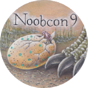

ContentsPractical infoRules Participants Side Events Live coverage FAQ |
See alsoOld School MtG blogDeck archetypes at Wak-Wak Twitch Old School videos Rotary Pub home page |

Welcome to the homepage for the Magic the Gathering 93/94 World Championships! This hypertext document should help answer any questions you might have about the event. Click on the links at the top of the page to navigate. If you still have any questions after consulting the Frequently Asked Questions (FAQ), feel free to contact the webmaster via e-mail at delaval@gmail.com.
What: The 9th annual n00bcon, aka The World Championship in Oldschool Magic. It's the place to show that you have what it used to take to be a master at Magic, but mostly to drink craft beer, look at amazing decks, and enjoy the fun side of magic tournaments.
When: Good Friday the 14th of April, starting at 14:00. Seven gruelling rounds of swiss followed by a top8. Rounds in the swiss are 60 minutes, the top8 is un-timed, but expected to be played at a reasonable pace.
Where: Rotary Pub at Richertsgatan 2, Gothenburg, Sweden.

You can check out some more info about the site at the Rotary Pub home page
Gothcon (Sweden's oldest gaming convention) will be held in Gothenburg at the same weekend, April 13-16. The Gothcon site is about 8 minutes walk from the n00bcon site. You can find the schedule for Magic at Gothcon by clicking this text.
Participation: There's an upper limit of 100 players at the event due to regulations in the pub. The players who have a spot confirmed at the tournament can be seen in the Participants section. We haven't printed out the waitlist here, but if you have asked to be signed up for the event and are wondering about your place in the waitlist, feel free to post an e-mail to the the webmaster. There are currently around forty players at the waitlist (as of March 8th), but don't hesitate to sign up anyway and we'll try to give the players who miss the chance this year a pass in line for next year.
The entry fee for the tournament is 150 sek (around €15). This fee is for covering expenses at the tournament such as location, personell, additional tables/chairs, thropies, pins, and a few Easter Eggs. If any money are left over after the tournament, it will be given to charity.
People who aren't participating in the tournament or work at the pub are unfortunately not allowed at the site. This is due to mainly three reasons:
If you just want to watch, feature matches from the tournament will be streamed live here. If you want to trade cards with someone not participating in the event, I reccomend that you meet up at e.g. the Gothcon site.
Prizes: The winner get a Giant Shark (The Dark). Top8 gets some sort of trophies. Some secret prices in Easter Eggs will be handed out as well. Of course everyone gets a rad convention pin with an Eastery Triassic Egg:

|
|
|
The main tournament will NOT be played for Ante; hence any cards that use the Ante mechanic are banned from being played.

Chaos Orb (2)
Artifact
1, Tap: Choose a nontoken permanent on the battlefield. If Chaos Orb is on the battlefield, flip Chaos Orb onto the battlefield from a height of at least one foot. If Chaos Orb turns over completely at least once during the flip, and touches the chosen permanent, destroy that permanent. Then destroy Chaos Orb.
The players at the n00bcon championship hails from 14 different nationalities and 34 different old school communities! From the far reaches of Europe across to the other side of the Atlantic ocean, mages gather to determine who's the Master of Magic Cards.


|
|
|
WORK IN PROGRESS!
WORK IN PROGRESS!
Commentary will be provided by Jesper "Yespair" Djinn alongside three-time Shark winner and former World Champion Elof "The Mighty" Gottfridsson.
WORK IN PROGRESS!
For the lower-tier spenders, it is possible to get sleeping quarters at the adjacent Gothcon convention (click here for info about Gothcon 41). A convention pass from Thursday to Sunday cost 300 sek (~€30), and access to the sleeping quarters an addition 50 sek (~€5). It is not very confortable nor private, but it works.
For most vistiors, e.g. Quality Hotel Panorama is a nice enough hotel just a couple of minutes walk from the site. A few returning players have reported staying at Scandic Opalen. There are many other options if you check e.g. AirBNB, TripAdvisor or Hotels.com.
For those of you with golden pants, Upper House at Gothia Towers is simply awesome. Dorsia and Avalon are also great hotels in the high-end part of the spectrum.
In the early days, Khalsa-Brain provided exclusive playmats for the Magic world championship. We figured that if we should have playmats here, they should be made in that spirit. So making "ordinary" printed playmats for n00bcon were out of the question. But we might have something in the works. Info will come before March 18.
We play using the current comp rules, nothing added or removed. The rule enforcement level is "Don't be a douche". It is very close to REL-Competative. Notable exceptions from REL-Professional:
Artist alterations of cards in legal sets are ok as long as you can read the full name of the card and its mana cost. Just make sure that your opponent knows what cards you are playing. The three first printings of The Gathering are legal; 1st Edition "Alpha", 1st Edition "Beta", and 2nd Edition "Unlimited".
Due to popular demand, the 1994 summer printings of The Gathering 3rd Edition distributed in Ireland and Tenesse (populary known as "Summer Magic" or "Edgar") are also legal.
The decks cannot contain "proxie cards" of any sort.
Yes!
Yes!